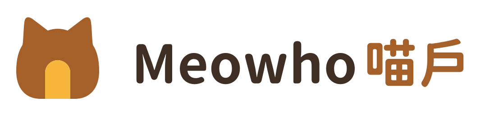
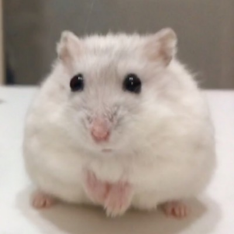
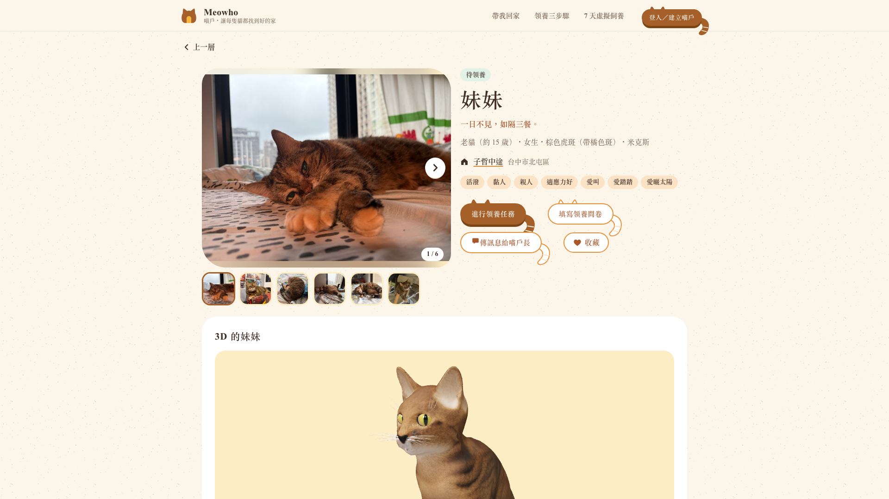
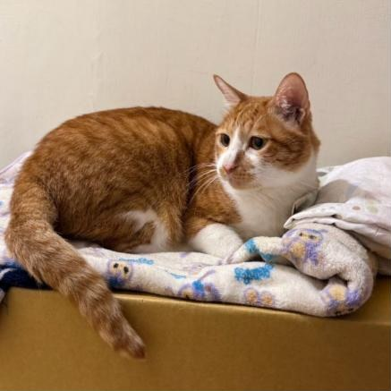
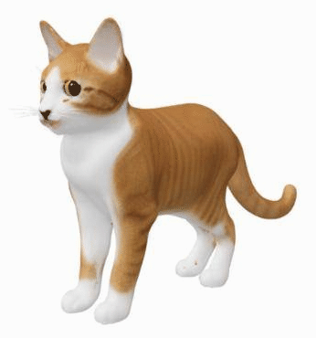
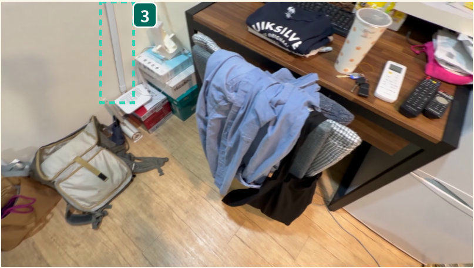
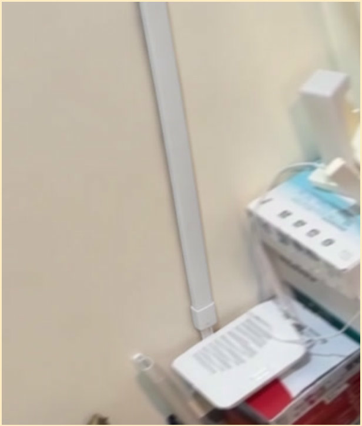
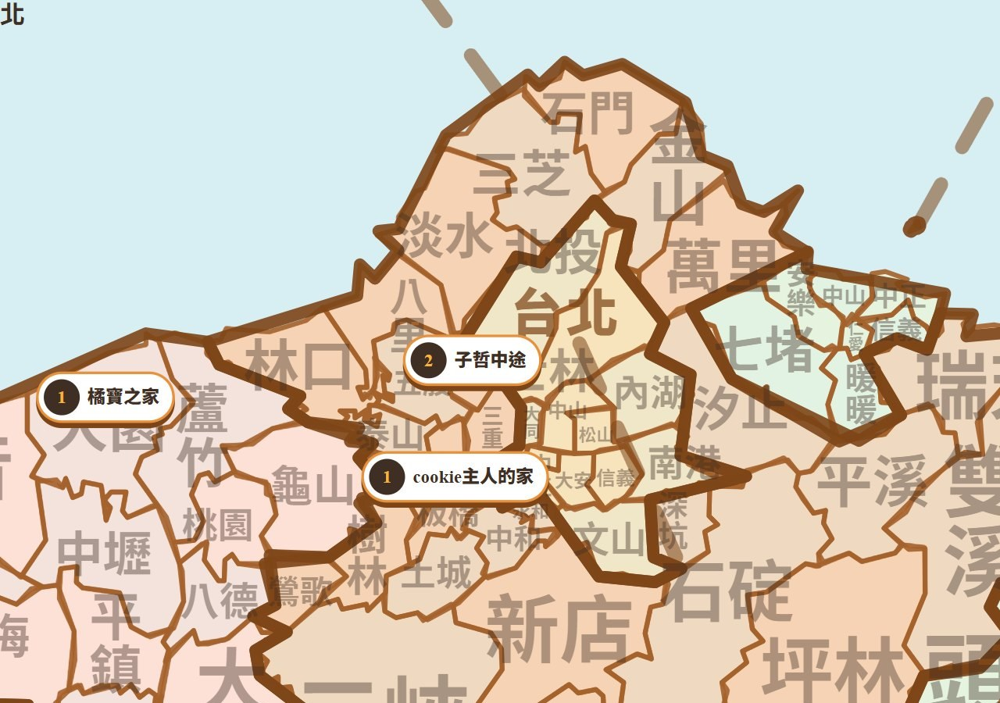
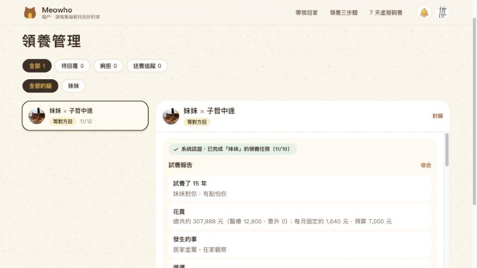

貓在找
準備好的你
掃描房間 3D 試養：讓貓先住進你家
今天的報告流程
領養流程哪裡出問題
前導影片、角色與流程
六人六段主線
中途建貓到貓咪移轉
AI 模組與系統架構
誰會用、怎麼走下去
01 / 23現在的領養流程，每一步都在賭
看不出合不合
審核只靠直覺
家裡安不安全不知道
花費、照顧沒概念
貓回到原點
02 / 23先看喵戶怎麼陪一隻貓找到家
03 / 23喵戶上的三個角色
審核喵戶、管理 3D 模型、儀表板
喵戶平台建貓、設問卷、決定送養
找貓、掃描自家、做領養任務
04 / 23喵戶的解決方案：兩條流程，在移轉會合
Google 登入
照片→3D 貓
可要求先做任務
決定送不送
一句話或地圖
3D 房間＋安全報告
一生 7 個時刻
附試養報告
05 / 23六個人、六段主線，每人從頭做到尾
主線串接、AI 配對、中途建貓、領養與移轉

一生 7 個時刻、場景光線、診間、試養報告
幼貓成貓骨架、貼圖 worker、MeowHQ 後台建置

安全檢測 worker、私有報告、刷牙摸貓
上傳與拍攝教練、3D 房間、家具切割
全島喵戶地圖、縮放聚合、點貓進介紹頁
06 / 23DEMO 流程：中途建貓到貓咪移轉
子哲
Tina
珮瑜
世安
清俊
渝茜
子哲
新帳號建貓、拍影片
3D 房間約 20 分、3D 貓 3～6 分在背景完成
07 / 23中途：一戶一喵戶，建好貓就能送養
中途建立喵戶
Google 登入，建立自己的喵戶

照片、個性；背景自動做 3D 分身
中途設定領養問卷
自訂問題，可要求先做領養任務
08 / 23一張照片，變成像本尊的 3D 貓
共用成貓、幼貓用同一組
原始照片與基本資料
AI 產生左側面、正面、背部照片
成貓模型自動產生
AI 上色，完成後自動套用
套用到 3D 動作貓
幼貓模型自動產生
AI 上色，完成後自動套用
套用到 3D 動作貓


09 / 23一支影片，怎麼變成 3D 房間
1
拍 1～3 分鐘
先教怎麼拍
上傳前檢查影片
插圖＋路線動畫
清晰度・亮度
2GPU＋CPU
約 6 分鐘
算出每張照片
在哪裡拍
COLMAP
GLOMAP
3GPU
約 4 分鐘
幾十萬顆橢球
堆出房間
Brush
3D Gaussian Splatting
4AIGPU
約 3～4 分鐘
找出床、書桌
在哪裡
Gemini
Grounding DINO
SAM 2
5
不到 5 秒
家具外框、床面高度
寫成一份檔案
scene.json
6
上傳約 15 秒
網頁走進房間
任務換成你家家具
gaussian-splats-3d
Three.js
快速模式 26 → 13 分鐘
但畫面太糊，刪掉
COLMAP 原本沒打開 GPU
打開不用加錢，GPU 已算在租金裡
VM 只開約 15 分鐘
最慢的 GLOMAP 只能用 CPU
換貴的 GPU 也沒用
10 / 23AI 居家安全健檢：從風險到改善證據




11 / 23非同步處理，改圖耗時降低 45.34%
從單路改成雙路並行，重疊等待模型回應
效能數字僅代表固定六件 Image Edit；不是全流程加速率。
12 / 23帶我回家：從你家附近找到貓

13 / 23帶牠回家之前，先陪牠過完一生
14 / 23每天親手照顧：6 個小遊戲，照真實方法設計
15 / 23十年後的帳單，在第 30 天就決定了
16 / 2315 年走完，變成一份只屬於你的試養報告
17 / 23帶著試養報告找中途，成功就移轉

中途看到：活了幾年、對你的感覺、總花費
18 / 23五個 AI 模組，各自負責一段主線
一句話推薦貓＋理由
LLM 擷取條件
Embedding＋pgvector
照片會動的 3D 貓
視覺模型・影像生成
Hunyuan3D-Paint
居家影片3D 房間＋家具
COLMAP・Brush 3DGS
Grounding DINO・SAM 2
同一支影片風險報告
FFmpeg・GPT 視覺
影像編輯改善示意
任務選擇報告＋意外劇情
規則與公式算數字
AI 只寫摘要
花費、年齡只來自資料或公式
使用者的話只當資料，防注入
LangChain 接 Azure、OpenAI、Gemini
19 / 23系統架構：重的 AI 交給背景 worker
手機／電腦瀏覽器
訪客、中途、領養人、管理員
前台 Meowho＋後台 MeowHQ
Next.js 15、React 19、three.js 3D
API：驗身分、簽上傳網址、建工作
AI 層 LangChain：輸出驗證、輸入防護
Google 登入
工作佇列
Postgres＋RLS
Realtime 對話串
pgvector 幫我找貓
Storage 照片・3D 檔
Azure OpenAI：對話視覺、影像生成編輯、Embedding
Blob 私有儲存：居家影片、安全報告
Hunyuan3D-Paint
COLMAP・3DGS・SAM 2
FFmpeg＋GPT 視覺
20 / 23商業價值：領養前準備，成為送養的標準一步
中途與愛媽社群
公私立收容所
校園、社區飼養課
認證中途進階方案
依報告推薦新手用品
企業 CSR 贊助收容所
GPU 隨開隨關
影片處理完就清
AI 供應商可切換
別的平台停在「找到貓」；喵戶處理帶回家之前那一段，用的是這隻貓和你家的真實資料。
21 / 23風險與因應：誠實面對 AI 做不到的地方
上傳前檢查長度；失敗通知重拍
中途確認後才公開；定位「像本尊」
報告是面談參考，不取代中途判斷
只當照護提醒；金額只來自公式
私有儲存、處理完清除、報告分層
工作佇列排隊、GPU 隨開隨關
22 / 23